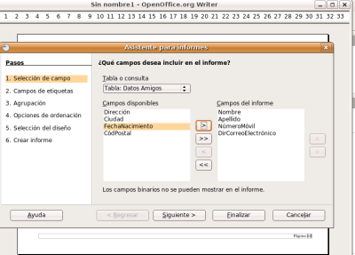
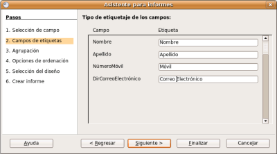
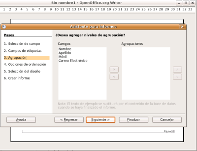
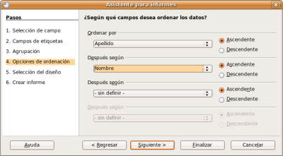
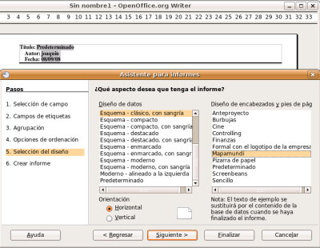
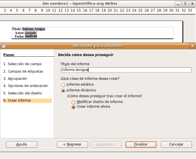
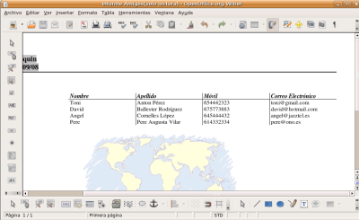

Vamos a crear un informe de la tabla Datos Amigos de la base de datos Amigos.odb.
Paso 1: Abrimos la base de datos Amigos.odb.
Paso 2: Elegimos el botón Informes y pulsamos Usar el asistente para crear informe...
Paso 3: Obtenemos una ventana como la de la figura en donde podremos elegir la tabla o consulta y los campos que queremos mostrar en el Informe.

Paso 4: Tal como se ve en la fugura anterior pasams a la columna de la derecha los campos Nombre, Apellidos, NúmeroMóvil, DirCorreoElectrónico y pulsamos el botón Siguiente.
Paso 5: En este paso del asistente podemos (opcionalmente) cambiar el nombre de las etiquetas de los campos. Nosotros no lo haremos.

Paso 6: En este paso se nos ofrece la posibilidad de agrupar por uno o varios campos.Nosotros no vamos a agregar ningún nivel de agrupación. A continuación pulsa el botón Siguiente.

En un informe se puede realizar un agrupamiento como máximo por
cuatro campos. Si agrupamos por más de un campo, dichos agrupamientos
se van anidando en función del nivel de cada grupo.
Para
entenderlo mejor supongamos que hacemos una lista de alumnos de los
tres últimos cursos académicos, esta lista la organizamos en primer
nivel por el curso académico y en segundo nivel por el nivel escolar al
que pertenece y en tercer nivel por el grupo al que pertenece cada uno
dentro del mismo nivel. En este caso el informe creará un primer nivel
de agrupamiento para el curso 2004/05, dentro de él creará un grupo
para 1º y dentro de él un grupo para A en el que aparecerá la relación
de alumnos que estaban en 1ºA en 04/05. A continuación aparecerá el
grupo B con su relación de alumnos. Si no hay más grupos aparecerá 2º
con sus correspondientes grupos y así sucesivamente para los tres
cursos académicos.
Paso 7: Aquí se nos pregunta si queremos ordenar los datos. Pon la información que ver en la figura de abajo. A continuación pulsa el botón Siguiente.

Paso 8: A continuación elegimos el aspecto que queremos que tenga el Informe. Elige los que ves en la figura de abajo. Después pulsa el botón Siguiente.

En este cuadro está la lista Diseños de datos
en el que nos muestra un buen número de plantillas predeterminadas para
que seleccionemos una para representar los datos de nuestro informe. Si
apartamos hacia un lado la ventana del Asistente observaremos que a
medida que vamos seleccionando cada uno de los diseños de esta lista
cambia la hoja del informe y así podemos hacernos una idea de cómo va
quedar.
Una vez decidido el diseño para los datos en el cuadro de lista Diseño de encabezados y pies de página
elegimos el modelo que más nos guste para la presentación de los pies y
las cabeceras de nuestro informe. Al igual que con los diseños de datos
vamos seleccionando uno a uno y vamos viendo el resultado en la página
del informe
Por último, dentro de este paso debemos
seleccionar si el informe se va a presentar en formato vertical u
horizontal. La utilización de una u otra orientación dependerá
fundamentalmente de la cantidad de columnas que tenga nuestro informe.
Paso 9: Ahora se nos pregunta el título del Informe (también será el nombre del Informe) y si lo queremos estático o dinámico. Si seleccionamos un informe dinámico dicho informe se guarda como
plantilla y al abrirse mostrará el contenido actual. En cambio, si
seleccionamos informe estático, al abrirse siempre muestra los datos a
partir del momento en que se creó dicho informe. Por lo tanto, con la clase estático, si añadimos o modificamos datos de la tabla Datos Amigos, no se mostrarán los cambios.
Nosotros elegimos la opción que muestra la figura de abajo:

Paso 10: En ¿Cómo desea proseguir tras crear el informe? debemos indicar la acción que se llevará a cabo cuando pulsemos sobre el botón Finalizar. Si seleccionamos Modificar diseño de informe al finalizar el Asistente nos mostrará el diseño de nuestro informe recién creado para que realicemos en él los cambios que estimemos oportunos.
Si seleccionamos Crear informe ahora
al finalizar el informe se guarda y nos muestra en pantalla el informe
listo para ser impreso tal como se muestra en la figura siguiente.
